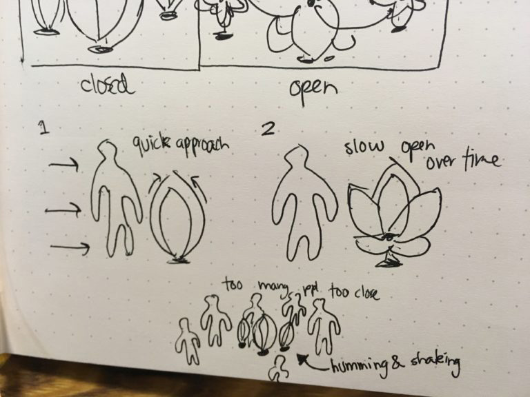
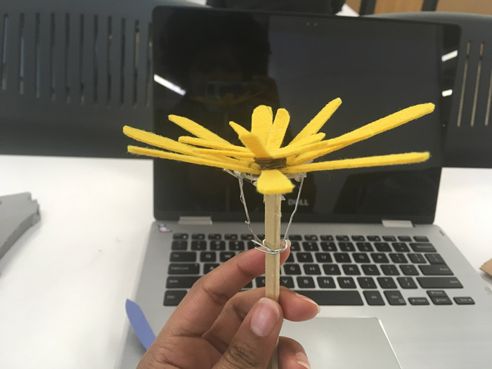
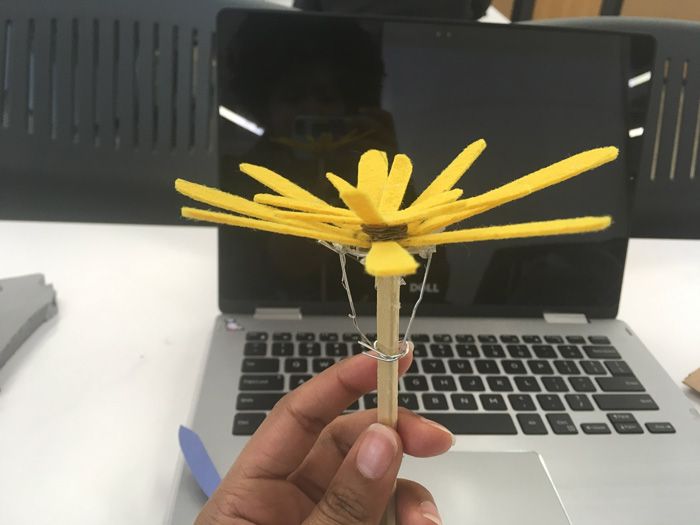
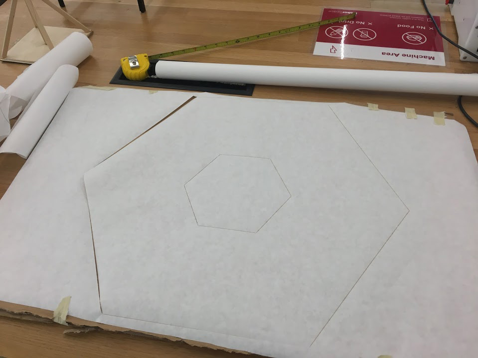
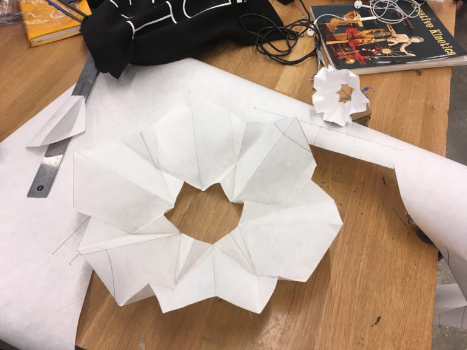
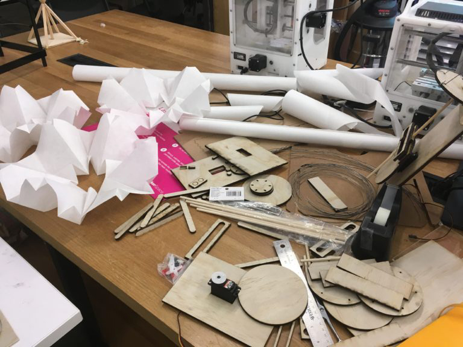
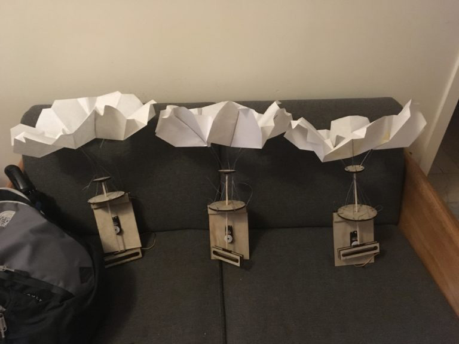
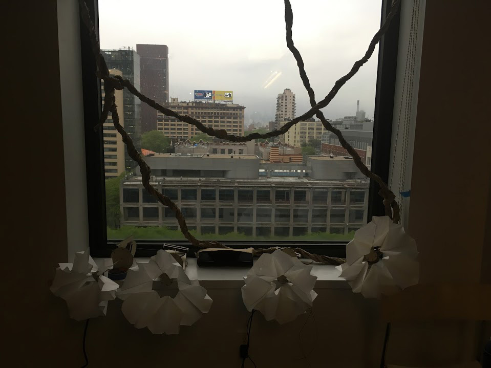
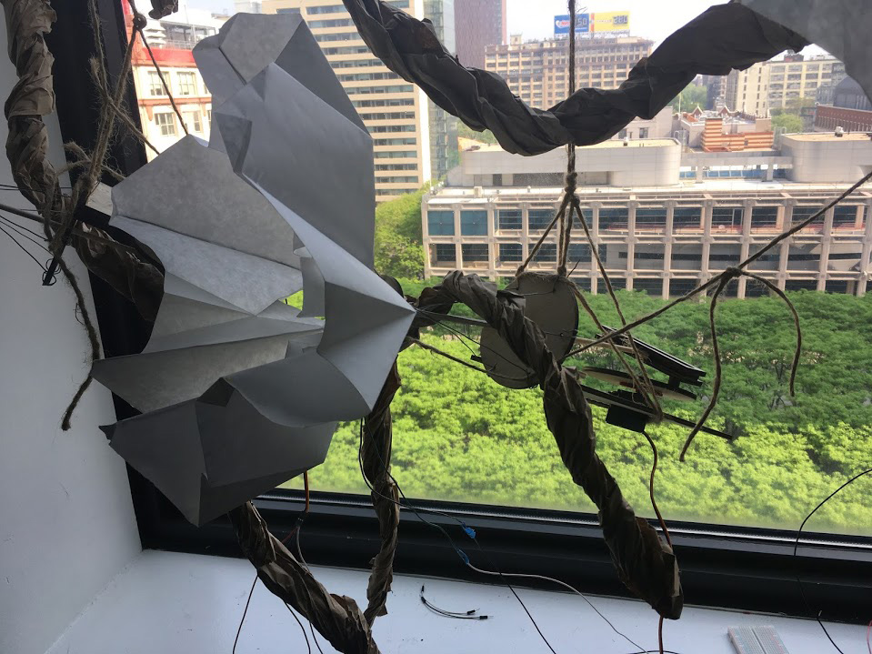

Sensitivities is a Kinect sculpture created of reactive and perceptive flowers. Inspired by the mimosa pudica, a flower that can react to physical touch, this sculpture meditates on the space around it. The thin, delicate flowers absorb their surroundings, and will withdraw into themselves if threatened by an over stimulation of people or motion.
When left alone, they breath gently.
Programmed in Max. Flowers fabricated with wood, paper, and wire. 2018.
[Github link]
Case Study / Fabrication process:
Mechanic Prototyping
 

Early prototype designs
Several mechanisms were tested to create the effect of the opening and closing of a flower. The challenge came from translating rotational motion (from a servo) into up-and-down or expanding-and-contracting movement.
Additionally, the chosen mechanism and materials needed to be simple and easily iterated, yet durable enough to stand up to the servos' motion.
Animation from Wikimedia Commons
{kind=link}
After several prototyping sessions, I decided to experiment with a "Scotch Yoke" style mechanism - which uses a piston coupled to a rotating pin to create back-and-forth motion.
I combined this mechanism with a laser-cut paper flower shape and wire. The fine and delicate material was chosen to reflect the "sensitive" design of the installation. Both the prototype and final servo-operated mechanism can be seen below.
 
Flower laser-cutting and folding
Iterating the design, I fabricated four flowers in total. The scotch-yoke mechanism was created from plywood, the flowers from thin poster-paper and 18 gauge wire.
 Fabricating the flowers
Each flower was independently operated with a single servo, which communicated with Max through an Arduino.
 Final Installation
Finally, the flowers were installed in the sunlight by a window, a reference to their original inspiration. Brown paper vines and twine filled the space around the flowers, creating a synthetic paper canopy.